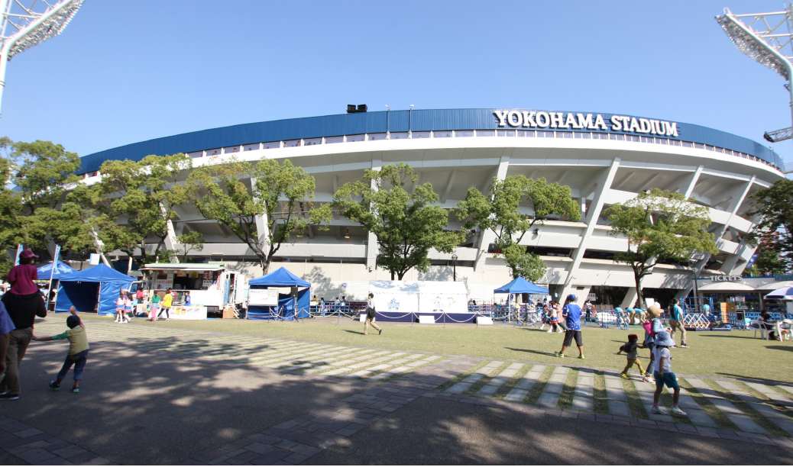
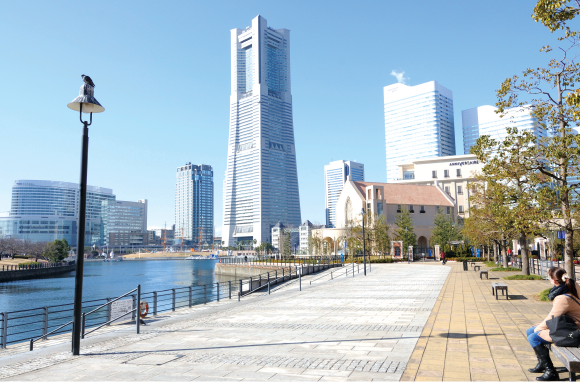
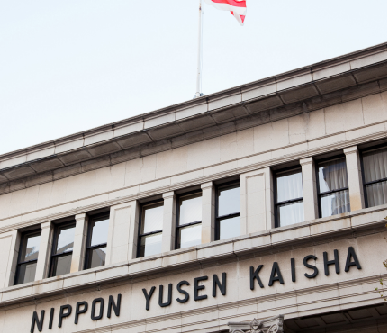
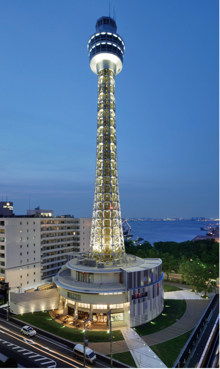

●JR京浜東北・根岸線
「関内」駅南口 徒歩4分
「横浜」駅へ直通 5分
「東京」駅へ30分
（JR根岸線（快速）利用、「横浜」駅でJR東海道本線アクティーへ乗り換え）
「品川」駅へ21分
（JR根岸線（快速）利用、「横浜」駅で京急本線（快速）へ乗り換え）
「新宿」駅へ34分
（JR根岸線（快速）利用、「横浜」駅で新宿湘南ライン（特別快速）へ乗り換え）
「渋谷」駅へ29分
（JR根岸線（快速）利用、「横浜」駅でJR湘南新宿ライン（特別快速）へ乗り換え）
●横浜市営地下鉄 ブルーライン
「関内」駅 徒歩4分
「新横浜」駅へ直通17分
●みなとみらい線
「日本大通り」駅1番出口徒歩5分
「渋谷」駅へ直通33分
（みなとみらい線（急行）利用、「横浜」駅で東急東横線直通（急行）の場合）
「現地」はエントランスを基点としています。
※徒歩分数は80mを1分と換算したもので、実際とは異なります。
※表示の分数は日中平常時の乗車時間です。乗換・待ち時間は含まれません。
※所要時間はご利用になる時間帯によって多少異なります。
関内駅周辺は、業務・商業専用地区に指定されており、
住宅などの建築は禁止されています。
プロスタイルウェルス関内住吉町は住居地域として住居を認められている範囲で
非常に関内駅に近い物件です。
| 凡例 |
横浜都心機能誘導地区
業務・商業専用地区……事務所・店舗などの立地を積極的に促進する地区。住宅などの立地は禁止されています。
商住共存地区……業務・商業機能と居住機能との調和を図る地区。住宅などの容積率を300%に制限。 |

官庁街でありながら繁華街でもある関内は、横浜開港時の面影が色濃く残る建造物や、
レトロな雰囲気を保ったままのレストランなどの歴史ある街並みと、
比較的新しいショッピングスポットとが共存する街です。

横浜スタジアム
横浜公園内にある日本初の多目的スタジアム。横浜DeNAベイスターズの本拠地で通称「ハマスタ」の愛称で親しまれています。
野毛商店街
多種多様な店が軒を連ね、お酒好きにはたまらないレトロな雰囲気が漂う、昭和の横丁です。
馬車道通り
神奈川県歴史博物館やガス灯などのレトロな建物も残る観光スポットです。
ショッピングモールや美術館が集まるエリア。
ランドマークタワーや赤レンガ倉庫などの名所観光や、美しい夜景も鑑賞できます。
クイーンズスクエア横浜
運河のほとりにそびえる３つのビル、クイーンズスクエア横浜。クイーンズイーストと[アット！]でショッピングを楽しめます。

運河パーク
運河沿いに整備されている公園。ベンチに座れば、運河越しに汽車道を眺められます。
日本丸メモリアルパーク
日本の航海練習用の大型帆船。その美しい姿から、「太平洋の白鳥」や「海の貴婦人」などと呼ばれている。
MARK IS みなとみらい
飲食・雑貨・ブティックなど、189店舗が入っている大型商業施設。

横浜美術館
美術教育資料や、明治期の浮世絵版画を含むコレクションがある美術館。
横浜アイランドタワー
高さ119ｍの超高層オフィスビル。新宿アイランドタワーは姉妹施設になります。
横浜赤レンガ倉庫
横浜赤レンガ倉庫は、歴史的建造物から生まれた楽しいショッピングやおいしいレストラン、様々なイベントなどが楽しめる施設です。
クロスゲート
個性的なショップ・レストランを連ねた複合型商業施設。
屋上庭園もあります。
横浜ワールドポーターズ
ファッション、インテリア、雑貨、グルメなど世代問わず楽しめる商品を多数ご用意。
よこはまコスモワールド
世界で初めての画期的な都市計画から生まれた未来志向の都市型立体遊園地。
コマットマーレ
カフェ、レストランなど約130店が集まる大型ショッピングセンター。施設内の広場では、音楽イベントも開催されます。
たたずまいの美しさが目を引く、ハイカラ建築横浜三塔など、
歴史的建築物が多数点在しています。
象の鼻パーク
横浜港発祥の地。象の鼻波止場を明治中期の形状に復元し、横浜港開港150週年となる平成21年6月2日に開園。
神奈川県立歴史博物館
運河沿いに整備されている公園。ベンチに座れば、運河越しに汽車道を眺められます。

日本郵船歴史博物館
日本の海運の歴史を紹介。企画展も開催しています。
横浜市開港記念会館
横浜の代表的建造物の一つとして多くの市民に親しまれ、現在は公会堂として利用。
横浜港に面する山下公園。横浜港大さん橋から横浜マリンタワーまで、
約1kmも続く臨海公園です。

横浜マリンタワー
横浜の街のシンボル。展望階の高さは94mで、夜になると華やかにライトアップされて美しく横浜の夜を彩ります。
日本郵便氷川丸
氷川丸は日本郵船が運行していた貨客船。船内には、氷川丸の歴史をお伝えする展示エリアなどがあります。
山下公園
ベイブリッジや湊を行き交う船の眺めがロマンチックな公園。海外との豊かな交流を感じさせるモニュメントが多数設置されています。
横浜港大さん橋
横浜港における国内及び外国航路の客船の主要発着埠頭。横浜港の象徴的存在であると同時に、横浜市や横浜港における主要観光地としても知られています。
世界最大級の規模を誇る横浜中華街には、600件以上の店がひしめいています。
世界最大級の規模を誇る横浜中華街には、600件以上の店がひしめいています。
かわいい山手の洋館を巡って、洗練された元町雑貨に
ふれて歩き疲れたら元町の名店で優雅なひとときを楽しめます。
港の見える丘公園
山手の観光コースからは外せない公園。横浜港・横浜ベイブリッジを望む絶好のビューポイント。横浜一のバラの名所で、春と秋にはローズガーデンも見頃です。
エリスマン邸
元町公園内、山手本通に面して立つ白い洋館。邸内では資料展示室のほか、暖炉のある応接室やサンルームなどを見学できます。
元町公園
春の桜の名所としても知られ、横浜山手の観光名所のひとつにも数えられます。
元町プラザ
美味しいレストランや、お洒落なショップなどが集まったショッピングプラザです。
アメリカ山公園
山手の歴史的な雰囲気と元町の賑が感じられる全国初の立体都市公園。
元町商店街
町内の大部分を占め、150週年以上の歴史があり、横浜を代表とする商業地の一つとして特に有名です。

 《残２邸》 オーナーチェンジ物件
《残２邸》 オーナーチェンジ物件